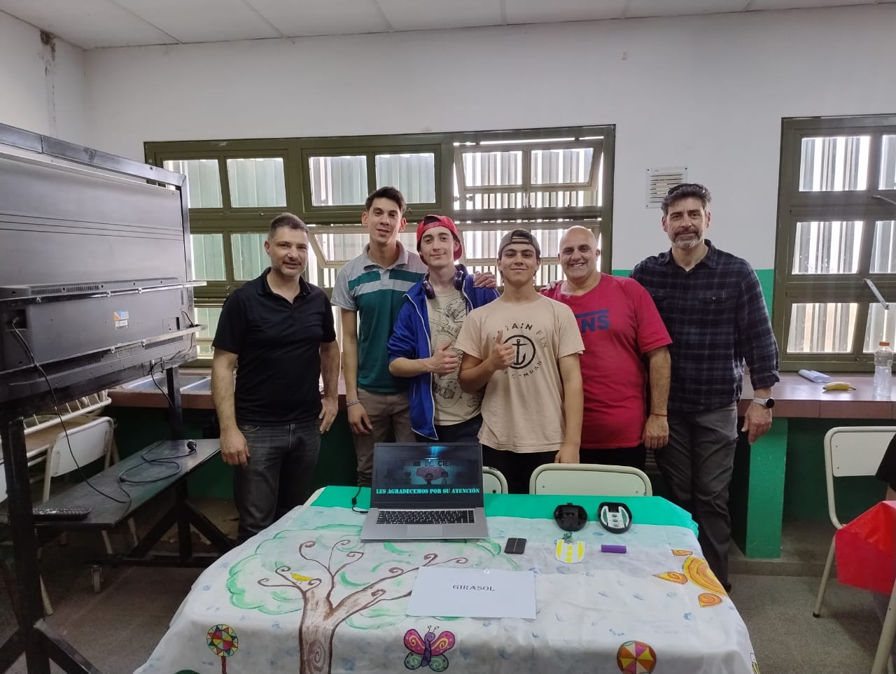
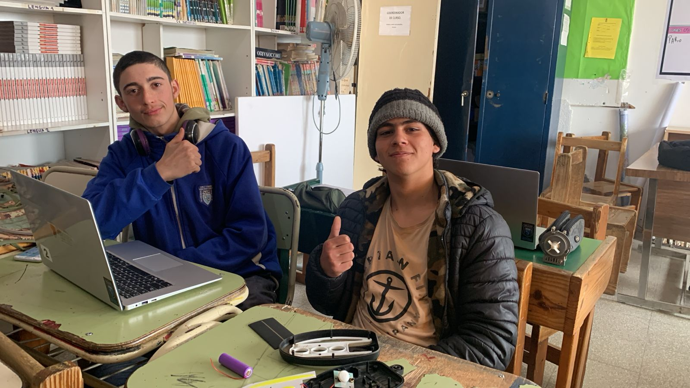
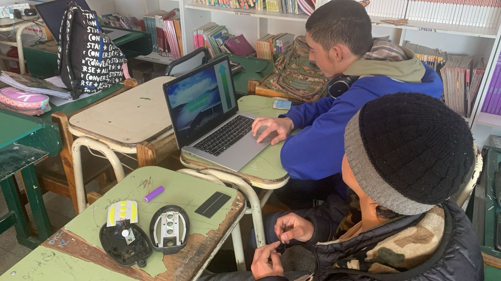

Este proyecto consiste en un panel solar que aprovecha la mayor cantidad de luz posible, tomando como referencia el comportamiento natural del girasol. El sistema permite que el panel siga la trayectoria del sol para mejorar la eficiencia energética durante todo el día.


